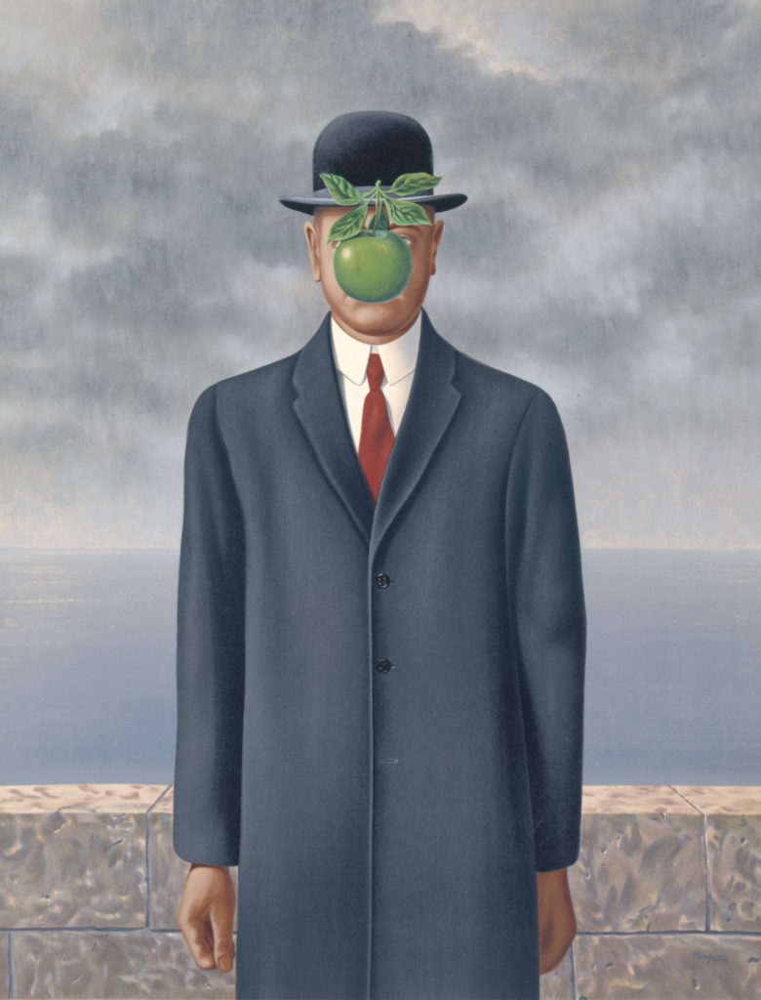
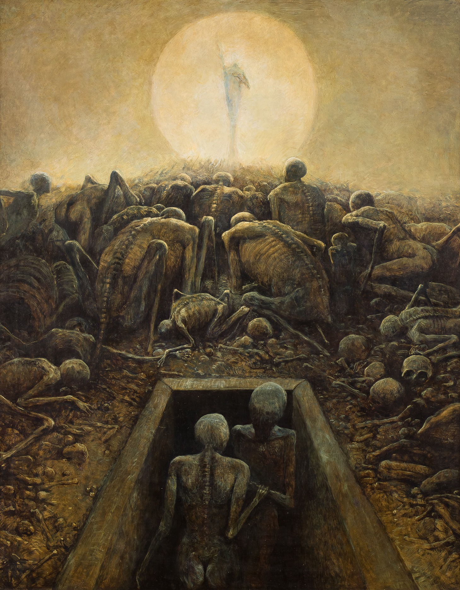
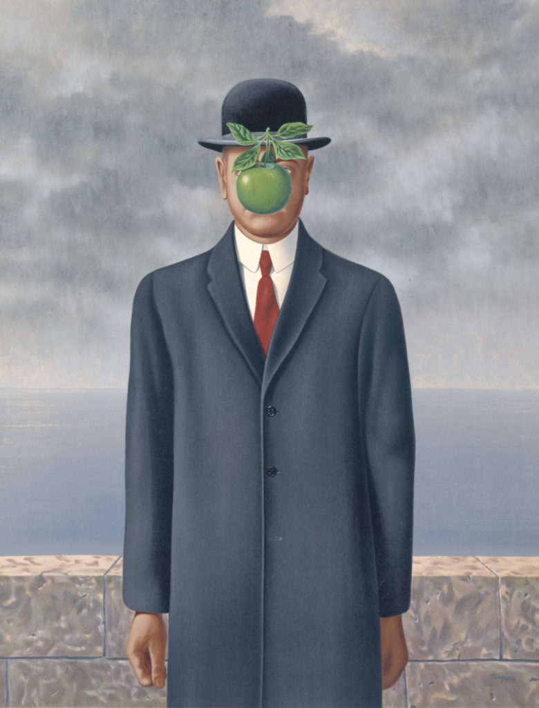
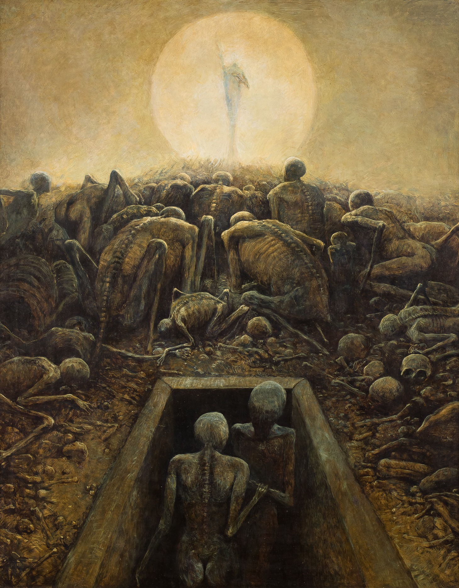

With a goal defined as "[resolving] the previously contradictory conditions of dream and reality into an absolute reality, a super-reality, or surreality", surrealism is an art and cultural movement that uses the subconscious mind to express itself. Much of the art in this movement is largely non-sequitur and often unnerving or fantastical.
 


